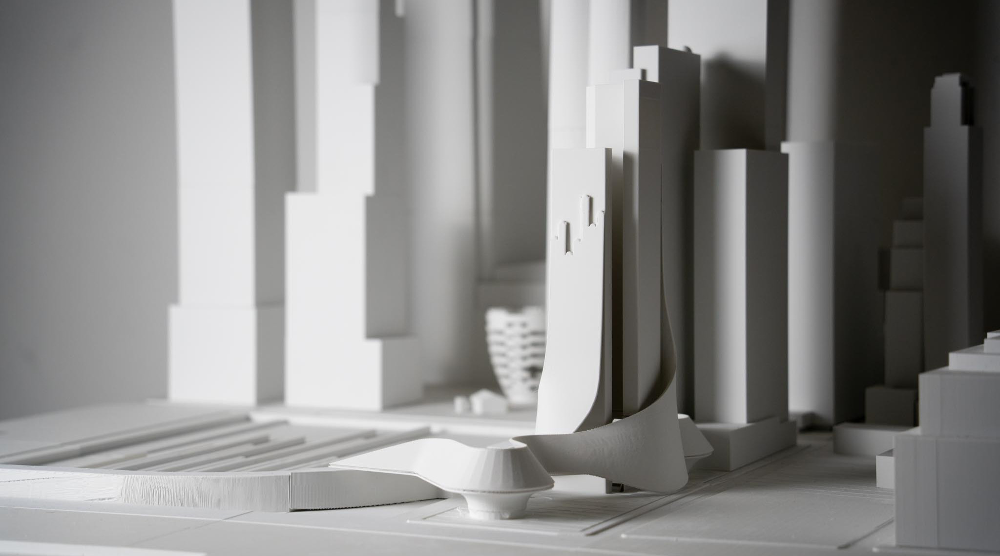

The Last Archive
A media art archive exploring the data center as civic infrastructure and a place for collective memory.

Overview.
How does a city house its collective memory in the age of the cloud? Located at the nexus of Chelsea’s Gallery District and the Hudson River, this project reimagines the data center as a civic monument. The architecture is defined by an evocative, performance-driven envelope that links the pedestrian flow of the High Line to the depths of the Hudson. Inside, the data core is experienced through a series of atmospheric thresholds—from cascading waterfalls of recycled coolant to immersive media galleries. By transforming infrastructural necessity into a sculptural landmark, the project acts as a luminous anchor for New York, preserving the future of media art within a dynamic, fluid, and environmentally-calibrated shell.
- Location
- New York Hudson Yard, US
- Year
- 2026. Jan - April
- Program
- Media Art Archive
- Instructor
- Jackilin Bloom + Damjan Jovanovic + Elena Manferdini
- Team Project
- Sungmin Jung + Henry Glesson + Hyung Gu Han
Drawings & process.
Studio note
Ten plates assembled across three media: atmospheric renders that establish the envelope and its weather, ZBrush scans that record the sculptural mass at fragment-scale, and Grasshopper diagrams that explain how the panel system was generated. The gallery is to be read in this order; the form precedes the script that makes it.